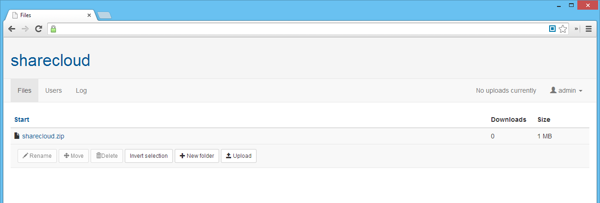

sharecloud enables you to share files using your very own server or webspace. This way you have total control over all files you are sharing.
sharecloud is very easy to use. Thanks to Bootstrap it is very responsive and looks great on all types of form factors.
sharecloud is very easy to deploy. As its based on PHP and MySQL you just have to upload all necessary files and run the installation routine.
sharecloud is open-source and everyone should feel free to contribute to this project. Report bugs, write patches or suggest new features - you are always welcome!